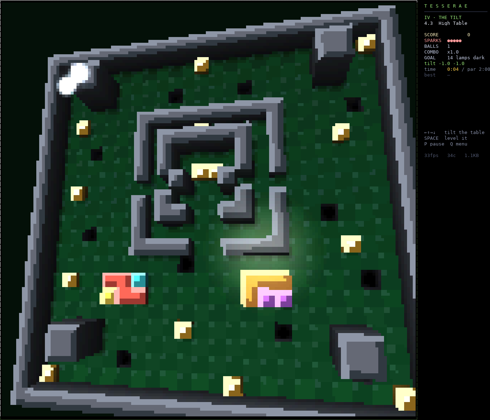
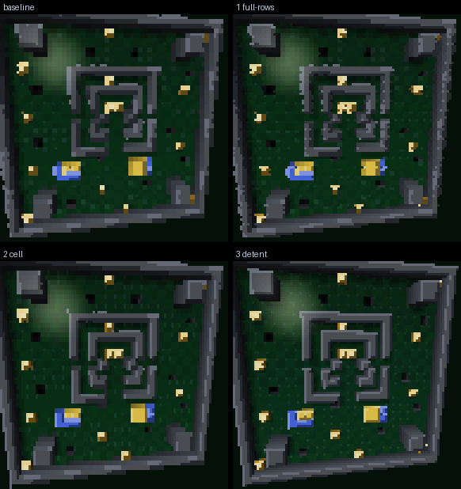

The game's labyrinth level is a flat 24×24 board in a terminal. When you tilt it, it leans in perspective: walls show their sides, pits are holes, and the lamp's sheen slides across the felt. It's still made of ▀ characters. Below is how the renderer works, with a live version you can tilt yourself.

This is a small JavaScript copy of the same algorithm on a 12×12 board: the same camera, inverse homographies, heightfield walk and lighting. The pixels are drawn in pairs, the way a terminal cell holds them. Turn on the cell grid to see the pairing, or switch to the coarse 2×2 sampling the game uses while you tilt.
The game never draws polygons. For each screen pixel it asks one question: what part of the table is under here? That's the same approach as the 2D game, where turning the field is a change in how pixels are sampled, not in what's drawn. 3D swaps in a richer answer to that question.
The tilt [tx ty] from the arrow keys becomes a rotation of up to about 11.5° per axis. A perspective camera sits above the board's centre (distance 42, focal length 0.88 of that), so an untilted board nearly fills the arena, just like the flat game. The physics never sees this: tilt only drives gravity on the marble.
For a flat plane at height z, board → screen is a 3×3 projective transform, a homography. Its inverse (the adjugate) sends a screen pixel straight back to the board point it shows. Two are built per frame: one for the plane at the tallest column's height, one for the felt.
Along a view ray, board x and y change linearly with height, so the two inverse maps give points A and B that bound everything the ray can pass over. A short grid walk from A toward B, top down, finds the first column the ray enters: a wall side (lit by its facing, darker toward the base), a column top (the cached tile art, lit), or the felt. Pits have negative height, so the walk keeps going down into them.
The felt takes its brightness from the board normal against a fixed light, normalised so an untilted table looks exactly like the 2D game. Two short probes toward the light cast wall shadows. The lamp's reflection in the board plane makes a sheen that moves about twice as fast as the tilt, which is what makes small tilts read.
About 30% of tiles have no column toward the camera's foot or toward the light, so their pixels skip the walk entirely. That shortcut was checked against the full walk with zero mismatched pixels across 18 level and tilt cases.
The marble's 3D centre is projected through the same camera and drawn as the game's glowing ball sprite, sized by depth, with a glint and a soft elliptical shadow stretched away from the light.
The board goes into a screen-pixel buffer that the game's normal compositor reads. Only changed cells are re-emitted, with colour state tracked across cursor jumps, all inside one synchronised terminal frame. Holding the table still costs about 0.01 ms.
Re-rendering every pixel on every small tilt step is expensive, so motion frames cut corners and refine once the tilt holds. How they cut corners decides how sharp a tilt looks:

| mode (flag) | tilting frame, full AOT | read |
|---|---|---|
| baseline | ~10 ms | blocky, combed while moving |
--t3d-full-rows | ~29 ms* | coherent, blocky |
--t3d-cell | ~31 ms* | crisp horizontally, banded |
--t3d-sharp (full rows + cell) | ~18 ms | coherent and crisp |
--t3d-detent | ~36 ms per step | sharpest; steps visibly |
* Measured before the unboxing pass below, which roughly halved the others.
The renderer is let-go code, AOT-lowered to native Go. A CPU profile of a full-resolution detent frame showed it wasn't the 3D maths that cost the time. Most of it was moving numbers in and out of boxes: values read from typed arrays come back as generic boxed values, and arithmetic on them allocates.
Shares overlap (cumulative). Moving every per-pixel number into small functions with ^double/^long-typed parameters, inlining constants, and replacing max, min and floor with plain conditionals took the full-resolution frame from 67 to 36 ms and the tilting frame from 16 to 10 ms, with byte-identical output. What's left (array element reads and integer indices) needs a compiler change: let-go#358.
Getting the whole renderer lowered at all needed a compiler fix first. One large function used to take over 95 minutes to compile; after let-go#1051 it takes about 70 seconds.
git clone https://github.com/mparrett/tesserae && cd tesserae git checkout spike/table3d ./play.sh --level 4.3 --3d --t3d-detent # High Table ./play.sh --3d # every tilt level in 3D
Needs let-go and a truecolor terminal; 124×50 or larger doubles the raster. The README covers the optional AOT build.